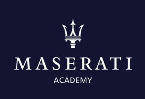

玛莎拉蒂经销商展厅试乘试驾
优秀案例收集
为了配合2019新产品上市培训，请各经销商伙伴，将您实际优秀的试乘试驾操作方案填写反馈，感谢您的配合！
请选择经销商名称
路线名称
(如果贵店有两条试乘试驾路线，烦请再次扫码第二条的相关信息)
一、路线规划
路线里程（KM）
道路设计总时长（分钟）
二、路线体验设计
路线涉及的“产品性能”体验点（可多选）
请描述您展示“车型设计”体验点的方式及方法
（“车型设计”包含：外观及内饰）
请描述您让客户感知“品牌光环”的方式及方法请描述您让客户感知“品牌光环”的方式及方法
上传试乘试驾亮点照片
(例：实际带客户前往的场所、途径设计的景点等)
三、其它
是否有试乘试驾专员
是否有“二次试乘试驾”体验设计
提交
性能
发动机响应
转向的精准
真正意义的手动操作
Skyhook悬架
制动性能
声浪
设计
B&W音响
无框架玻璃设计
座椅的支持性
制动性能
品牌效应
品牌的光环效应
确定